前言
本章我开始论述lua的弱表(weaktable)机制，到目前为止，我已经完成了弱表的设计和实现了，读者可以在dummylua的对应章节目录，找到对应的代码工程。本章，我首先会介绍什么是弱表，它的用途，最后分别介绍弱键、弱值以及完全弱引用。
什么是弱表？
弱表是什么？按照官方的定义，弱表是用来告诉Lua虚拟机，被弱表引用的对象，不应该阻止他们被gc回收[1]。与弱表相对的是强表。对于强表来说，所有被强表引用到的gc对象，都会被标记，从而不会被gc机制回收，哪怕这些变量再也没被使用到。因此，对于强表来说，如果你希望被它引用的对象能够被gc回收，那么你需要将它的值设置为nil。对于弱表来说，但凡被设置为弱引用的对象，均不会被gc标记，当再也没有其他地方引用该对象时，它们会从弱表中被清除。
前面讨论了弱表的概念，现在来讨论一下，弱表中，弱引用的类别。弱引用一共有3种，第一种是弱键，第二种是弱值，第三种是完整弱引用。我们来看一下它们的设置方式。
local mt = {__mode = "k"}
local tbl = setmetatable({}, mt)在上面的例子中，mt是tbl的元表，mt的__mode域设置了值k，这表明了，我们的tbl表是个弱表，并且是个只包含弱键的弱表。接下来，我们来看一下弱值的设置方式：
local mt = {__mode = "v"}
local tbl = setmetatable({}, mt)本例和前面一个例子的区别是，元表mt的__mode域，被设置为了v，而mt又是tbl的元表，此时tbl是个只包含弱值的弱表。相对应的，完全弱引用的弱表设置方式如下所示：
local mt = {__mode = "kv"}
local tbl = setmetatable({}, mt)弱表的用途
前面我们论述了，什么是弱表，那么它又有什么用途呢？一种比较合适的用途，就是为缓存机制添加自动回收功能，比如如下的代码：
local mt = {__mode="v"}
local tbl = setmetable({}, mt)
local function getFromCache(key)
if tbl[key] then
return tbl[key]
end
tbl[key] = loadFromDB(key)
return tbl[key]
end我们可以看到，当外部通过getFromCache获取到tbl[key]的值之后，如果一直持有，那么这个值就会一直在tbl缓存中，如果外部不再引用tbl[key]值时，那么它会在下一轮gc的时候从tbl被清理。这样，我们就不用去实现相对复杂的LRU机制，来对tbl的内存进行限制和处理了。
当然，这里只是讨论了弱表使用的其中一个例子，其他的使用范例，交给读者自己去探索。
弱键
前面我们已经讨论了什么是弱表，以及不同模式的弱引用的设置方式。本节将讨论的是弱键，当一个表被设置为弱键时，在gc阶段，它会被扫描，并且有着其自身的标记规则。在开始讨论标记规则之前，我们首先简要回顾一下Lua GC机制的几个极端。我们的Lua GC一共需要经历如下几个阶段：pause、propagate mark、atomic和sweep阶段，实际的实现逻辑，要比这几个阶段更细，目前我们只是简单回顾一下，更多的内容，可以回顾Garbage Collection基础架构。现在分别来对这几个阶段，进行简要回顾：
- pause阶段：GC的暂停阶段。虚拟机在运行阶段，初始化完成后或者上一轮GC结束后，会进入一个GC暂停阶段，在这个阶段，虚拟机不会进行任何的传播、扫描、标记和清除操作。在当前虚拟机内存是初始化值或上一轮GC之后的两倍时，结束本状态，进入下一个状态。
- propagate阶段：这个阶段，Lua虚拟机会从Root Set(mainthread和registry表)开始传播和扫描。Root Set首先会被放到一个被称之为gray的列表中（此时他们被标记为灰色），尔后在合适的时机，触发GC操作时，Lua虚拟机会从gray列表中，取出若干个对象，先将其标记为黑色，再对其所有的引用对象进行扫描（被扫描的引用对象，会被标记成灰色），在对他们进行扫描之后，会有更多的对象被塞入到gray列表中，然后不断重复，从gray列表中取出GC对象，标记和扫描的操作。gray列表会经历一个，从增加到减少，最后到为空的过程。当gray列表为空时，进入下一个阶段。
- atomic阶段：我们有些被标记为黑色的对象，由于某种原因（比如表又被添加新的对象，那么该表需要重新被设置为灰色）被放入grayagain列表。这些被放入grayagain列表的GC对象，不会在propagate阶段被再次扫描和标记，而是在atomic阶段统一进行处理。atomic阶段的逻辑也很简单，就是不可中断，一次将grayagain列表里的所有GC对象，进行传播、扫描和标记，直至处理完所有的对象，和上一轮的propagate阶段有点类似，只是propagate阶段，可以拆分到不同的GC步骤里去执行，而atomic阶段，则是一次执行完。
- sweep阶段：我们所有被创建的GC对象，都会被放入一个叫做allgc的列表中，sweep阶段，则是遍历这个列表，每次从allgc列表中，取出若干个对象，如果对象为白色，则将其释放。完成这个阶段之后，就进入到新一轮GC的pause阶段。
我们的弱引用，主要是有其特殊的扫描和标记规则，主要发生在GC的propagate和atomic阶段，我们后面会逐步展开论述。在开始讨论弱键的扫描和标记规则之前，我们先来回顾一下强表的扫描和标记规则。如图1的表，它是一个扫描标记前的强表(假设table里所有被引用的对象，都是GC object)。
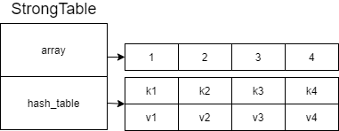图1
现在，我们执行GC操作，要对其进行扫描和标记，于是得到图2的结果：
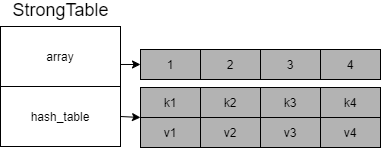图2
我们可以发现，强表中，所有被引用的object都会被标记，被标记的对象，将不会被GC清除，未被标记的白色对象，会在GC的sweep阶段被清除。现在我们来看看，包含弱键的表是怎么处理的。包含弱键的表，需要分为几个部分来讨论：
- Lua table的array部分
- hash表部分中，key值只包含非collectable对象(integer、float、boolean)和string类型时的情况
- hash表部分中，key值只包含collectable对象的情况(string类型除外)
我们现在来看看第一种情况，Lua table是弱键模式时的array部分处理，如图3，虽然该表是弱键模式，但是array部分所引用到的所有值，都会被扫描和标记，得到图4的结果：
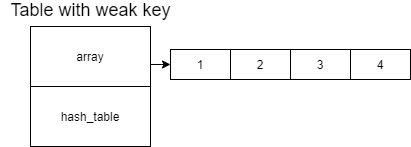图3
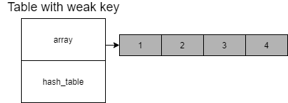图4
现在，我们来看看第二种情况，当我们的key是非collectable对象(integer、float和boolean)以及string对象时，其所对应的value在GC阶段会被全部标记，其中string类型的key比较特殊，当我们遍历到string类型的key时，会直接尝试标记它，并且将其引用的对象标记，表现形式则是从图5到图6。
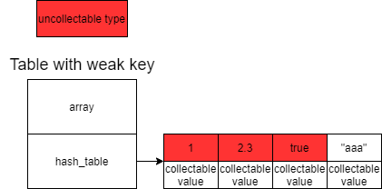图5
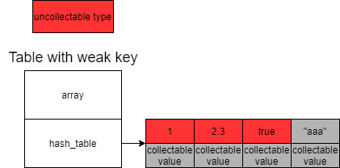图6
这里尤其是要注意的是，我们的string类型的key “aaa”，被直接标记，并且其所对应的value也被标记，为什么要这样处理，在本节最后，我会进行论述，现在暂时放一下。
接下来，我们来看一下第三种情况。这种情况的key，全部是collectable对象，如图7所示，除了white-white entry(key和value都是白色的，未被标记的对象)，其他的collectable对象的情况，均囊括在了该图中：
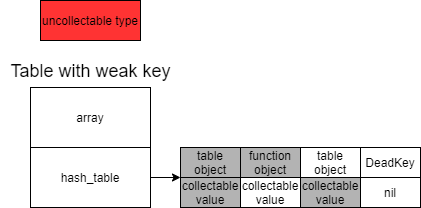图7
如果，此时进入到GC阶段，要对该表进行扫描，那么我们将得到图8的结果：
图8
我们可以看到function object为key，所对应的value被标记了。不论是array部分，还是hash表部分，但凡有value被标记，就意味着整个表被标记。在propagate阶段，弱表会被直接塞入到grayagain列表中，留到atomic阶段再处理。而在atomic阶段，Lua虚拟机首先会一次完成grayagain列表的扫描和标记操作，此时再处理弱表时(前面讨论的流程)，如果弱表中，有值被标记，并且hash表部分没有white-white entry(键值对均是未标记的白色对象)，那么该弱表会被塞入到allweak列表中。前面讨论的几种情况，在GC的atomic阶段，都是直接塞入到allweak列表中的。接下来要讨论white-white entry的情况，一旦一个弱表中，包含white-white entry，在propagate阶段，GC扫描之后，会被放入grayagain列表中，而在对grayagain列表进行处理的atomic阶段，它会被放入一个被称之为ephemeron列表中。allweak列表、ephemeron列表均是global_State结构的成员变量。
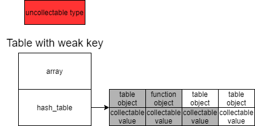图9
在atomic阶段结束之前，GC机制，会分别对allweak和ephemeron列表的key进行清理，然后对weak表(后面会讨论)和allweak表的value进行清理。
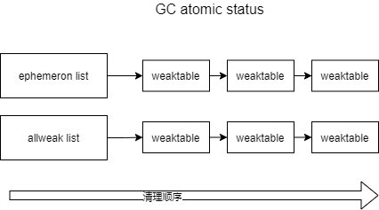图10
上图展示了key的清理顺序，图11则展示了allweak列表的keys清理流程：
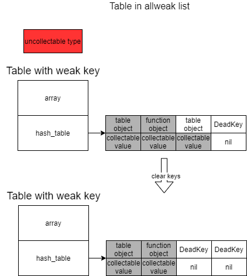图11
我们可以看到，clearkeys阶段，但凡被标记为白色的key，最后都被清理掉了。接下来我们来看一下，ephemeron列表内的weaktable是怎么清理的。
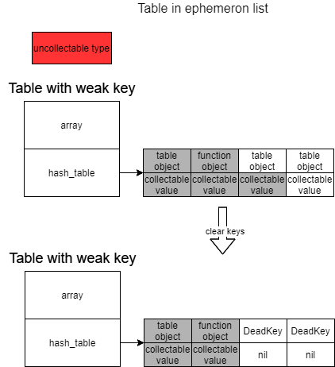图12
和allweak列表一样，但凡被标记为白色的，位于ephemeron列表中的弱表，他们的key和value也会被清理掉。
接下来还有一个非常重要的点需要去讨论，就是为什么我们的white-white entry要单独放在ephemeron列表中呢？这个ephemeron列表到底发挥什么样的作用？为什么不能直接放到allweak列表中呢？带着这个问题，假设我们遇到了这样的情形。我们都知道，只要是弱键模式下的弱表，包含了white-white entry的时候，它就会被放入到ephemeron列表之中，就如图13所示：
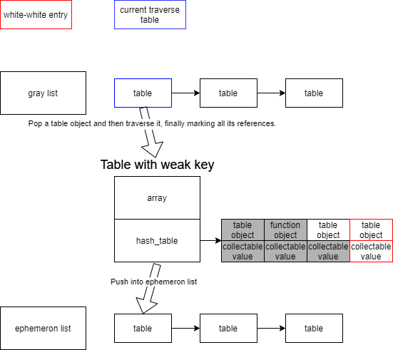图13
到这里，有些读者可能会有疑问，同样的表对象，我们放到ephemeron列表和allweak列表中，最终white key的部分都会被清除，效果看上去是一致的，为什么不能将white-white entry也放入到allweak列表中呢？原因是，我们的gray列表(其实会做这个操作，已经是atomic阶段了，其本质是grayagain列表)很可能没有遍历完，当我们继续扫描和标记后面的对象时，原来的white-white entry可能发生变化，如图14所示：
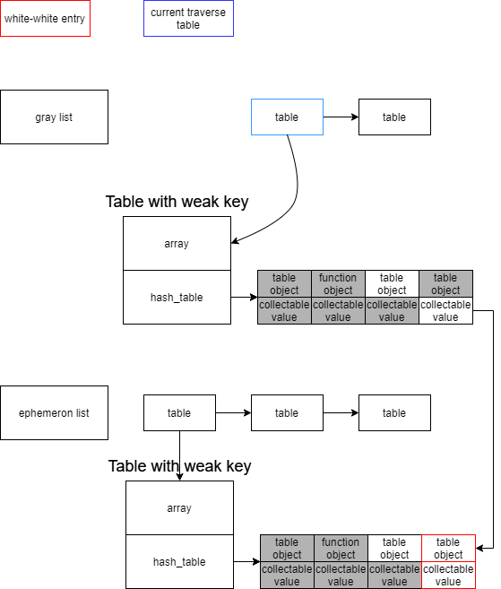图14
此时，上面的那个弱表的最后一个collectable value，对应的是ephemeron列表中，white-white entry的key值，在完成扫描操作之后，我们的white-white entry的key值，会被标记，得到图15的结果：
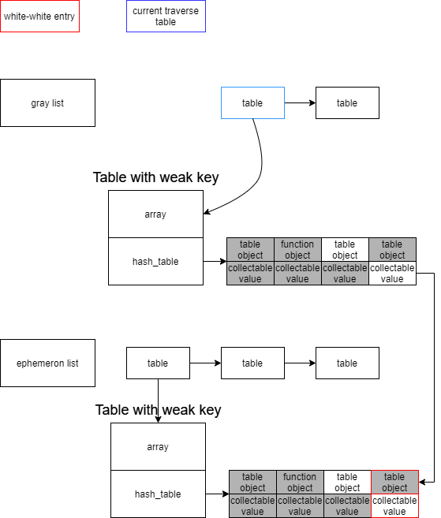图15
在Lua的GC atomic阶段，我们在清理allweak列表之前，会对ephemeron列表进行一次收敛操作，检查是否有键值对，需要被标记，如果有，那么在遍历完本轮的ephemeron列表之后，还需要重头再遍历一次，但凡一个table还有white-white entry，那么它仍然会被放入ephemeron列表中，如果没有white-white entry，但是还有white key，那么就会从ephemeron列表中移除，被放入allweak列表中。我们可以在这里看一下它的代码：
// luagc.c
static void converge_ephemeron(struct lua_State* L) {
int changed = 0;
do {
changed = 0;
struct GCObject* gco = G(L)->ephemeron;
struct Table* ephemeron = gco2tbl(gco);
G(L)->ephemeron = NULL;
for (; ephemeron != NULL; ephemeron = gco2tbl(ephemeron->gclist)) {
if (traverse_ephemeron(L, ephemeron)) {
propagateall(L);
changed = 1;
}
}
} while (changed);
}外层之所以需要有个while循环，主要原因是，对某个ephemeron列表中的某个对象实现标记之后，在本对象前面的，已经遍历过的对象如果也发生改变了，那么它也可能产生新的影响，因此，只有所有的ephemeron列表中的对象，没有发生任何状态改变时，收敛操作才会结束。我们来看一下图15的情况，这种情况下，最后一个collectable value会被标记，因为该弱表已经没了white-white entry，因此会从ephemeron列表中被移除，然后又因为它拥有一个white key，因此它最终会被塞入allweak列表中，如图16所示：
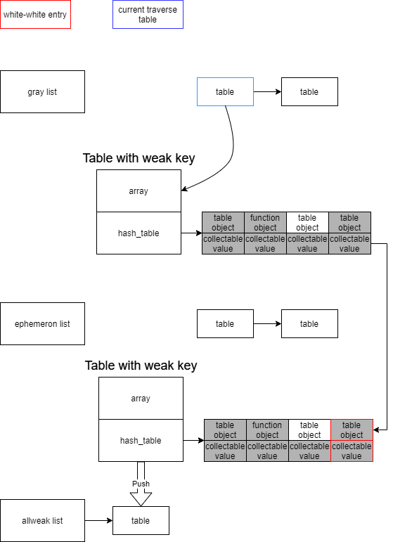图16
我们可以看到，我们重新扫描了这个弱表，并且对所有非white key所对应的value值进行了标记，并且该弱表，也从ephemeron表中移动到了allweak表中。尔后进入到清理allweak表的white key时，之前的临时被标记为white-white entry的键值对，也不会被清理，因为它们最终并不是真正的white-white entry。如果在一开始，就把该对象塞入allweak表会有什么后果呢？因为allweak列表没有像ephemeron列表那样的收敛操作，因此，它的结果会如图17所示，collectable value并没有被标记的机会(ephemeron列表的收敛操作，会对所有的表进行扫描和标记操作)，虽然在allweak的clearkey阶段，它不会被处理，但是在clearvalue阶段也会被清空，因此ephemeron是个非常重要的机制。
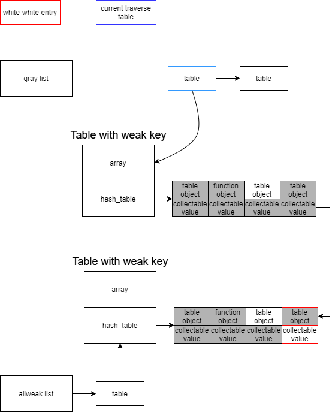图17
我花费了较大的篇幅对弱键的通用机制进行了详细的说明，现在我们来看一个例子：
local weakkey_tbl = { __mode = "k" }
local t1 = setmetatable({}, weakkey_tbl)
ga = {} -- global table a
gb = {} -- global table b
do
t1[1] = "test1"
t1[2] = function() end
t1["test"] = "test2"
local t_str3 = "test3"
local key = {}
t1[key] = t_str3
local t_str4 = "test4"
local xxfunc = function() end
t1[xxfunc] = t_str4
local tv1 = {}
local tv2 = {}
t1[tv1] = tv2
t1[tv2] = tv1
t1[ga] = gb
t1[gb] = ga
end
ga = nil
gb = nil
collectgarbage()
print("------------------")
for k, v in pairs(t1) do
print(k, v)
end 这段代码是dummylua part12里的测试用例(欢迎star)，其运行结果如下所示：
------------------
1 test1
2 badf98
test test2在这个例子中，t1的key，1、2是uncollectable对象，因此其对应的值会被直接标记，而test是字符串，除了它自己会被标记外，其所对应的test2字符串也会被标记，key、xxfunc、tv1和tv2因为是local变量，因此出了do end域，就不再可达，因此他们也会被清理掉，最后ga和gb所对应的表，因为在collectgarbage函数被调用前(这是fullgc操作)，被设置为nil，因此global table a和global table b也变得不可达，最后也会被一并GC掉。
到目前为止，我就已经完成了弱键部分的全部讨论了，后面我将讨论弱值的情况。
弱值
对于弱值表的处理，在GC的propagate阶段，和弱键表一样，是直接塞入grayagain列表的。而在GC的atomic阶段，则需要经历先扫描，再标记，再塞入weak列表，最后清理weak列表引用的过程。我们现在首先来看一下，扫描一个弱值表，要经历什么样的操作。
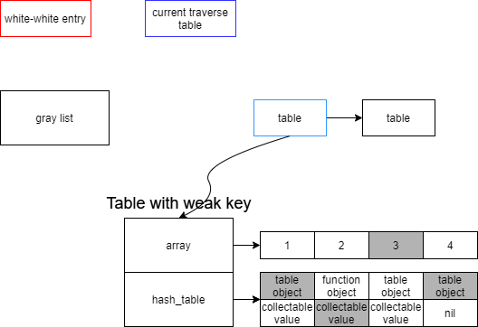图18
如图18的弱值表，Lua虚拟机扫描它时，并不会对array部分进行任何处理，如果一个弱值表，的array部分不为空，那么这个表一定会被塞入到weak列表中。图中，第3个array的slot被标记为灰色，表示这个位置所对应的值是被标记过的。这里之所以，不对array部分进行任何处理，是因为，array各个slot所关联到的值，可能在gray列表中后续要被遍历的表引用到，从而被标记，因此这个阶段不论如何都不能直接将白色的实例解除引用关联，最保险的做法是，在清理weak表阶段再集中处理。
接下来，就是扫描弱值表的hash表部分了，首先会遍历所有的value部分，如果value的值为nil，则将key设置为DeadKey，如果value不为nil，则将key标记，于是我们得到图19的结果：
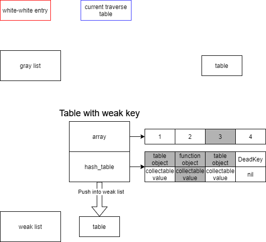图19
在完成扫描和标记之后，就是到了清理阶段了，此时，所有array部分的白色对象，均会被设置为nil值，而在hash表中，所有value为白色的对象，均会被设置为nil，并且key被设置为DeadKey，如图20所示：
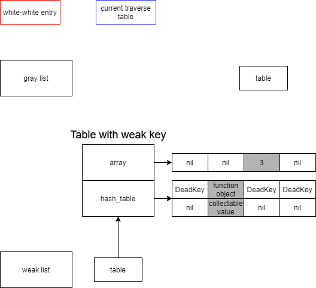图20
到现在为止，我就已经完成了弱值的讨论了，接下来看一个例子：
local weakvalue_tbl = { __mode = "v" }
local t2 = setmetatable({}, weakvalue_tbl)
do
t2[1] = 1
t2[2] = "test2"
t2[3] = function() end
t2["xxfunc"] = function() end
local vtbl = {}
t2["xxfunc2"] = vtbl
end
collectgarbage()
print("------------------")
for k, v in pairs(t2) do
print(k, v)
end 得到如下输出：
------------------
1 1
2 test2上面的例子中，do end域里，值1是uncollectable类型，”test2”是字符串类型，因此他们是不可被回收的，其他均是临时的不可达对象，因此在GC之后，会完全被清理。
完全弱引用
完全弱引用的处理非常简单，但凡元表的__mode域被设置为”kv”时，它们会被直接放到allweak列表中，而不会对表中的key或者value值进行标记，在atomic阶段，在完成完整的GC之后，会分别对它的keys和values进行清理，前面已经有论述过了，这里不再赘述。
我们现在来看一下下面这个例子：
local weakkv_tbl = { __mode = "kv" }
local t3 = setmetatable({}, weakkv_tbl)
do
t3[1] = "test1"
t3[2] = function() end
t3["test2"] = "test2"
local key = {}
t3[key] = "test3"
local xxfunc = function() end
t3[xxfunc] = "test4"
end
collectgarbage()
print("------------------")
for k, v in pairs(t3) do
print(k, v)
end 其输出为：
------------------
1 test1
test2 test2上面的例子中，t3[2]的value未被标记，因此要清理，除了t3[1]和t3[“test2”]以外，其他的键值对，要么key未被标记，要么value未被标记，因此会被清理。
关于ephemeron机制的深度思考
本节，我将更进一步讨论ephemeron机制。细心的读者可能已经发现了，我们弱键和弱值的扫描标记处理，是不一样的。对于弱值表而言，遍历hash表部分的时候，只要value是collectable，并且为非nil值时，不管它有没有被标记过，是什么颜色，均会对其所对应的key值进行标记。但是我们的弱键处理，却要复杂一些，现在简要回顾一下它的流程：
- array部分，所有的value都会被标记
- hash表中，如果key被标记，value也被标记，那么不需要做任何处理
- hash表中，如果key被标记，value未被标记，那么将value标记
- hash表中，如果key未被标记，value被标记，那么弱值表会被放入allweak列表中
- hash表中，如果key未被标记，value也未被标记，那么弱值表被放入ephemeron列表中
针对上面的流程，针对第2到第4步，其实本质就是只要key不是DeadKey，不管key是什么颜色，value都是处于标记状态。那么第5种情况中，为什么value不能被直接标记呢？我们来看一个例子：
local t = setmetatable({}, {__mode = "k"})
e1 = {}
e2 = {}
t[e1] = e2
t[e2] = e1
e1 = nil
e2 = nil
collectgarbage()
print("------------")
for k, v in pairs(t) do
print(k, v)
end我们得到的结果是：
------------t表已经是空的了。如果我们采用弱值表的方式，直接对value进行标记，会遇到什么情况呢？图21说明了这一点：
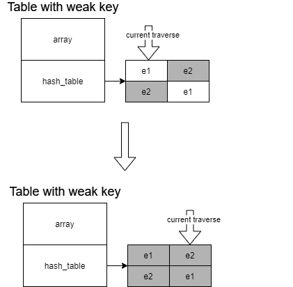图21
我们发现，经过一轮遍历，e1和e2均被标记，此时再将该弱键表放入ephemeron列表已经没有意义了，因此white-white entry要单独处理。
结束语
本章，我论述了弱表的运作机制，先从弱表的概念开始，然后讨论了它怎么设置模式，再到弱键的讨论，以及弱值的讨论，最后讨论了ephemeron机制的必要性，到目前为止，我们应该对弱表有更深层面的理解了，下一章，我们将进入到require机制的深度探索之中。
Reference
[1] Weak Tables Weak tables are the mechanism that you use to tell Lua that a reference should not prevent the reclamation of an object. A weak reference is a reference to an object that is not considered by the garbage collector. If all references pointing to an object are weak, the object is collected and somehow these weak references are deleted. Lua implements weak references as weak tables: A weak table is a table where all references are weak. That means that, if an object is only held inside weak tables, Lua will collect the object eventually.